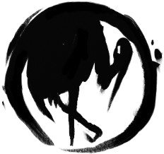

<ion-menu [content]="content">
  <ion-header class={{color}}>
    <ion-toolbar>
      <ion-title>Choose your Clan</ion-title>
    </ion-toolbar>
  </ion-header>

  <ion-content class={{color}}>
    <ion-list>
      <button menuClose ion-item *ngFor="let p of pages" (click)="openPage(p)">
        {{p.title}}
      </button>
    </ion-list>
    <button ion-button style="background-color:#75768a" (click)="colorChange('crab')" full large></button>
    <button ion-button style="background-color:#bfac62" (click)="colorChange('lion')" full large></button>
    <button ion-button style="background-color:#2e7291" (click)="colorChange('crane')" full large></button>
    <button ion-button style="background-color:#874335" (click)="colorChange('scorpion')" full large></button>
    <button ion-button style="background-color:#715a87" (click)="colorChange('unicorn')" full large></button>
    <button ion-button style="background-color:#c1885a" (click)="colorChange('phoenix')" full large></button>
    <button ion-button style="background-color:#608373" (click)="colorChange('dragon')" full large></button>
  </ion-content>

</ion-menu>

<!-- Disable swipe-to-go-back because it's poor UX to combine STGB with side menus -->
<ion-nav [root]="rootPage" #content swipeBackEnabled="false"></ion-nav>
